Fonte: gare di altri paesi/Canada/all/2025_CAP_Exam_with_solutions.pdf · Apri PDF · apri PDF p.4
Cluster: Elettromagnetismo
Problema 1
LED color and threshold voltage
LEDs red, green and blue (all of the same power) are connected in parallel to a variable voltage source. The voltage is slowly increased from 0. Which diode will light up first?
A. Red B. Green C. Blue D. All will light up at the same voltage.
Topic: Modern-Quantum Physics, Circuits Metodi: Photon Energy Relation Competenze: Physical Reasoning Fonte: Testo (PDF) — p.4
Problema 2
Incandescent bulb with sinusoidal voltage
A sinusoidal voltage wave form with frequency of 10 Hz is delivered to a small incandescent bulb. The light coming from the bulb will be:
A. Steady B. Flickering at 10 Hz C. Flickering at 5 Hz D. Flickering at 20 Hz
Note: we can perceive flickering only at frequency less than 30 Hz.
Topic: Circuits, Oscillations & Waves Metodi: Physical Modeling Competenze: Physical Reasoning Fonte: Testo (PDF) — p.4
Problema 3
LED with sinusoidal voltage
The same sinusoidal voltage wave form with frequency of 10 Hz is delivered to an LED. The light coming from the LED will be:
A. Steady B. Flickering at 10 Hz C. Flickering at 5 Hz D. Flickering at 20 Hz
Note: we can perceive flickering only at frequency less than 30 Hz.
Topic: Circuits, Modern-Quantum Physics Metodi: Physical Modeling Competenze: Physical Reasoning Fonte: Testo (PDF) — p.4
Problema 4
Focal length of a cut thin lens
A thin lens of focal length cm is cut into two equal halves. What is the new focal length of each half?
A. 2.5 cm B. 5 cm C. 10 cm D. 20 cm E. 40 cm
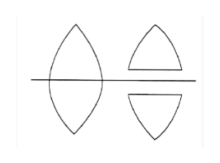
lente intera e due metà tagliateTopic: Geometric Optics Metodi: Thin Lens & Mirror Equation Competenze: Physical Reasoning Fonte: Testo (PDF) — p.4
Problema 5
Solar energy on the Moon at half moon
When we see a half moon (first or third quarter moon), the amount of energy reaching the moon from the Sun is:
A. About half of the energy reaching the moon from the Sun compared to when we see full moon. B. About the same energy reaching the moon from the Sun compared to when we see full moon. C. About a quarter of the energy reaching the moon from the Sun when we see a full moon. D. Depends on the season.
Topic: Astrophysics Metodi: Physical Modeling Competenze: Physical Reasoning Fonte: Testo (PDF) — p.4
Problema 6
The internal surface of a semi-cylinder shown in the diagram is a mirror. A narrow beam of light propagating in a plane perpendicular to the axis of the semi-cylinder hits the upper edge at point I, at an angle of to the line –. Point C in the figure is located on the axis of the semi-cylinder. After how many reflections will this ray leave the semi-cylinder?
A. 1 B. 2 C. 3 D. 4
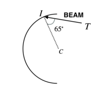
semi-cilindro specchio con raggio incidenteTopic: Geometric Optics Metodi: Ray Tracing Competenze: Diagrammatic Reasoning, Physical Reasoning Fonte: Testo (PDF) — p.5
Problema 7
Why the light turns on immediately
Speed of electrons in an electrical wire is of the order of mm per second. The light goes on immediately when we close the switch because:
A. All electrons start moving and doing work at the same time after we close the switch. B. We are using AC voltage so electrons only have to move forth and back by a very short distance. C. Emitting light from any bulb has nothing to do with movement of electrons. D. Electric field, which forces the electrons to start moving, propagates with speed close to the speed of light. E. A and B are true. F. A and D are true.
Topic: Electromagnetism, Circuits Metodi: Physical Modeling Competenze: Physical Reasoning Fonte: Testo (PDF) — p.5
Problema 8
Water level when a cup sinks
A person is floating on an inflatable mattress in the pool and drinking water from a metal cup. At some point this person drops the cup into the pool and the cup sinks. The level of the water in the pool:
A. stays the same B. goes up C. goes down D. goes up or down depending how much water is in the cup.
Topic: Fluid Mechanics Metodi: Hydrostatic Equilibrium Competenze: Physical Reasoning Fonte: Testo (PDF) — p.5
Problema 9
Fast vs slow tire deformation
Two identical truck tires are deformed by the same amount: one very quickly when the car hits a curb, and the other very slowly when the truck bed is filled with snow. The ambient temperature is C in both cases. Which deformation required a larger force to occur?
A. The fast one B. The slow one C. Both needed the same force D. Not enough information to decide
Topic: Thermodynamics, Elasticity & Materials Metodi: Thermodynamic Cycle Analysis, First Law of Thermodynamics Competenze: Physical Reasoning Fonte: Testo (PDF) — p.5
Problema 10
On the blank computer screen 18 cm high, the following picture of the cursor was observed when the mouse was moved. What was the speed of the mouse? The typical computer display works with 60 frames per second.
A. About 1 m/s B. About 2 m/s C. About 4 m/s D. About 1 cm/s E. About 2 cm/s F. About 4 cm/s
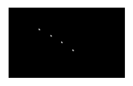
cursore stroboscopico su schermo neroTopic: Order-of-Magnitude Estimation Metodi: Order-of-Magnitude Estimation, Kinematic Equations Competenze: Estimation & Approximation, Physical Reasoning Fonte: Testo (PDF) — p.6
Problema 11
Microwave standing wave pattern in chocolate
A microwave oven works at the frequency of 2.4 GHz. A large sheet of chocolate was placed in the working microwave (without the rotating plate). After it was removed, there was a distinct pattern of partly melted chocolate. The areas of melted chocolate were separated by areas of non-melted ones. What was the distance between the melted regions?
A. About 6 cm B. About 12 cm C. About 24 cm D. About 48 cm
Topic: Oscillations & Waves Metodi: Wave Equation, Order-of-Magnitude Estimation Competenze: Estimation & Approximation, Physical Reasoning Fonte: Testo (PDF) — p.6
Problema 12
Lift capacity of a hot air balloon
One day when the temperature is C and pressure is close to the standard pressure, a hot air balloon with the air heated to C and volume of can lift about (including its own weight):
A. 1200 kg B. 1020 kg C. 170 kg D. 340 kg E. 860 kg
Topic: Fluid Mechanics, Thermodynamics Metodi: Ideal Gas Law, Hydrostatic Equilibrium Competenze: Estimation & Approximation, Physical Reasoning Fonte: Testo (PDF) — p.6
Problema 13
Four equal charges of are placed at the four corners of a square with side length . At which point is the magnitude of the electric field the greatest?
A. In the centre of the square B. In the middle of each side C. Close to one of the corners D. Far from the charges
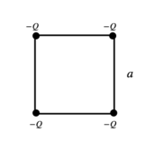
quadrato con quattro cariche -Q agli angoliTopic: Electrostatics Metodi: Coulomb’s Law, Superposition Principle Competenze: Physical Reasoning Fonte: Testo (PDF) — p.6
Problema 14
A beam of light is directed towards an 8-sided rotating mirror. After getting reflected by one of the sides, light travels to a fixed mirror 60 km away, and reflects back to the rotating mirror. What is the minimum frequency of rotation of the mirror at which the light beam reflects along the original direction and reaches the detector?
A. 300000 rpm B. 75000 rpm C. 37500 rpm D. 18750 rpm
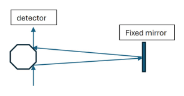
specchio ottagonale rotante e specchio fissoTopic: Geometric Optics Metodi: Kinematic Equations, Physical Modeling Competenze: Physical Reasoning, Mathematical Modeling Fonte: Testo (PDF) — p.7
Problema 15
An RC circuit consists of two identical capacitors and , in series, a resistor , a battery with voltage , and two switches and initially open, as shown in the diagram. Initially switch is set to position “B” and then at time 0 it is moved to position A. At time 0.4 s switch is moved back to position B and at the same time switch is closed. Which of the following graphs correctly represents the measured voltage as a function of time?
A. [graph A] B. [graph B] C. [graph C] D. [graph D] E. [graph E] F. [graph F]
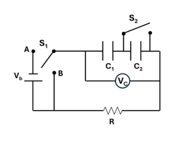
circuito RC con C1, C2, R, S1, S2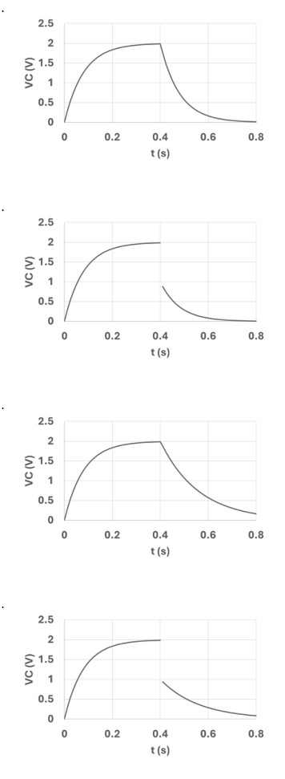
grafici Vc(t) opzioni A-D circuito RC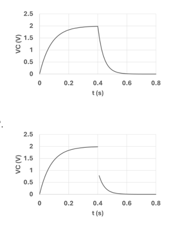
grafici Vc(t) opzioni E-F circuito RCTopic: Circuits Metodi: Kirchhoff’s Laws, Equivalent Circuit Reduction Competenze: Diagrammatic Reasoning, Physical Reasoning Fonte: Testo (PDF) — p.7
Problema 16
Ratio of rectangular mirror dimensions
The figure below shows the cross-section of a rectangular mirror with dimensions and . A light ray reflects between the mirrors such that its trajectory traces out a single rectangle with dimensions and . What is the ratio ?
A.
B.
C.
D.
E.
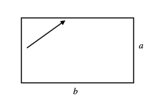
sezione rettangolare specchio con raggio a×bTopic: Geometric Optics Metodi: Ray Tracing, Vector Decomposition Competenze: Diagrammatic Reasoning, Mathematical Modeling Fonte: Testo (PDF) — p.8
Problema 17
Tablecloth trick: fast vs slow pulling
You are showing the trick of pulling a sheet of paper from under a glass of water without moving the glass much or spilling the water.
A. You should pull the paper fast to reduce the friction force between the paper and glass. B. You have to pull paper very slowly to keep the glass from moving. C. You are pulling the paper fast so the force of friction acts on the glass for a very short time. D. The glass does not move at all if you are fast enough.
Topic: Newtonian Mechanics Metodi: Impulse-Momentum Theorem, Free-Body Diagram Competenze: Physical Reasoning Fonte: Testo (PDF) — p.8
Problema 18
Induced EMF from parabolic magnetic flux
The graph of the magnetic flux passing through a loop as a function of time is a parabolic curve. The axis of symmetry of the parabola is parallel to the axis. What is the magnitude of the induced electromotive force (emf) at the moment ?
A. 0 μV B. 1 μV C. 2 μV D. 3 μV
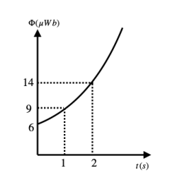
grafico flusso magnetico parabolico Φ(t)Topic: Electromagnetic Induction Metodi: Faraday’s Law of Induction, Calculus-Integration Competenze: Graph Linearization, Mathematical Modeling Fonte: Testo (PDF) — p.8
Problema 19
Minimum time interval with two burning ropes
In old times, to start a delayed explosion, for example in mining, one would set fire to one end of a rope, which would burn slowly along its length, with the other end at the explosive material. Suppose you have two non-identical ropes, each of which takes one hour to burn its entire length. The ropes have varying thicknesses, so different sections burn at different rates. What is the minimum time interval you can measure with the two ropes?
A. 1 hour B. 45 minutes C. 30 minutes D. 15 minutes
Topic: Order-of-Magnitude Estimation Metodi: Physical Modeling Competenze: Physical Reasoning, Estimation & Approximation Fonte: Testo (PDF) — p.9
Problema 20
Geiger-Muller counter dead time correction
A Geiger-Muller counter is used to detect particles created during a radioactive atom’s decay. The dead time of a Geiger-Muller counter is the interval between two detections within which the counter is unresponsive. That is, right after a detection, the counter does not register a particle if it arrives within the dead time. Consider a counter recording counts per second. If the resolving time for the counter is s, what is the best estimate of the actual count per second taking into account that the decay of a radioactive atom is a probabilistic event?
A. – B. – C. – D. – E. It can be any random number.
Topic: Nuclear & Particle Physics Metodi: Radioactive Decay Law, Statistical Averaging Competenze: Physical Reasoning, Mathematical Modeling Fonte: Testo (PDF) — p.9
Problema 21
A horizontal string is attached to an oscillator at one end and a hanging mass at the other. The oscillator’s frequency is adjusted such that the string is vibrating in the second harmonic mode, forming a standing wave. Now, imagine immersing the hanging mass in water. Which of the following options is correct?
A. The second harmonic mode will no longer be excited. It can be restored by increasing the oscillator’s frequency. B. The second harmonic mode will no longer be excited. It can be restored by decreasing the oscillator’s frequency. C. The second harmonic mode will no longer be excited. It cannot be restored by adjusting the frequency. D. The second harmonic mode will not be affected.
Topic: Oscillations & Waves, Fluid Mechanics Metodi: Simple Harmonic Motion Analysis, Wave Equation Competenze: Physical Reasoning Fonte: Testo (PDF) — p.9
Problema 22
A horizontal string is attached to an oscillator that oscillates vertically at one end, and a hanging object with uniform density at the other. The oscillator’s frequency is adjusted such that the string is vibrating in the second harmonic mode, forming a standing wave. You immerse the hanging mass in water and observe that the string is now vibrating in the fourth harmonic mode. What is the density of the hanging mass?
A. of the density of water B. times the density of water C. of the density of water D. of the density of water
Topic: Oscillations & Waves, Fluid Mechanics Metodi: Simple Harmonic Motion Analysis, Hydrostatic Equilibrium Competenze: Physical Reasoning, Mathematical Modeling Fonte: Testo (PDF) — p.10
Problema 23
We know that the electric field generated by a single infinite flat sheet with a uniform charge distribution has a constant magnitude and is perpendicular to the surface. Now, consider two infinite non-conducting flat sheets with uniform but opposite charge distributions, perpendicular to each other. Which figure correctly shows the shape of the electric field lines between the sheets?
[Options A, B, C, D show different field line configurations.]
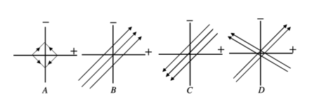
linee di campo E tra lastre perpendicolari A-DTopic: Electrostatics Metodi: Gauss’s Law, Superposition Principle Competenze: Diagrammatic Reasoning, Physical Reasoning Fonte: Testo (PDF) — p.10
Problema 24
A raindrop begins to fall from rest at time in the presence of resistive force , where is the speed of the raindrop and is a constant. Which graph represents the velocity of the drop over time?
[Options A, B, C, D show different - graphs.]
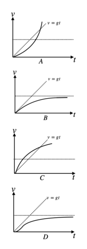
grafici v(t) goccia pioggia con resistenza A-DTopic: Newtonian Mechanics Metodi: Differential Equations, Free-Body Diagram Competenze: Graph Linearization, Physical Reasoning Fonte: Testo (PDF) — p.10
Problema 25
The following diagram shows two coils of a conducting wire wrapped around a core. The electric current running through coil 1 changes with time as shown in the picture on the right diagram. Which graph correctly describes the induced current in coil 2?
A. 1 only B. 2 only C. 3 only D. 4 only E. 1 or 4 F. 2 or 3
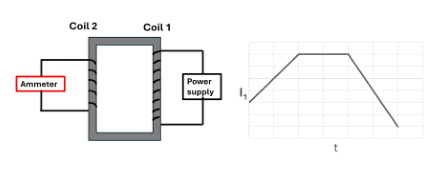
doppia bobina su nucleo con grafico I1(t)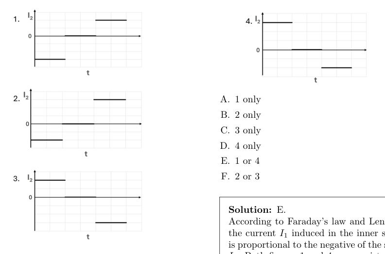
grafici corrente indotta I2(t) opzioni 1-4Topic: Electromagnetic Induction Metodi: Faraday’s Law of Induction, Lenz’s Law Competenze: Diagrammatic Reasoning, Physical Reasoning Fonte: Testo (PDF) — p.10
Problema 26
Two eggs, one hard boiled, the other raw, were rotating for a long time at 20 rotations per second. At some point the torque forcing them to rotate was removed. Which one will stop first? Which one will be warmer after it stops? Estimate how much warmer. This will be just an order of magnitude calculation — you are not expected to give an accurate value, just an estimate.
The rotational kinetic energy of the sphere is , where is the moment of inertia of the sphere about the center of mass, and is the angular speed. The moment of inertia of a solid sphere is given by the formula , where is the radius and is the mass of the sphere.
Topic: Rotational Dynamics, Thermodynamics Metodi: Conservation of Energy, Torque & Angular Momentum Analysis Competenze: Estimation & Approximation, Physical Reasoning, Mathematical Modeling Fonte: Testo (PDF) — p.12
Problema 27
A circular copper coil consisting of 90 loops of radius , and a total resistance , is attached to a plastic pulley with radius , as shown in the figure below. A non-elastic rope of negligible mass is wrapped around the pulley and attached to a hanging mass . When released, the rope unwinds without slipping as the hanging mass drops. A uniform magnetic field is initially perpendicular to the plane of the coil.
a. Derive an expression and calculate the numerical value of the average terminal speed (the terminal speed might vary slightly during each revolution of the coil).
b. Sketch a graph of velocity of the hanging mass as a function of time. You don’t need to include any numerical values.
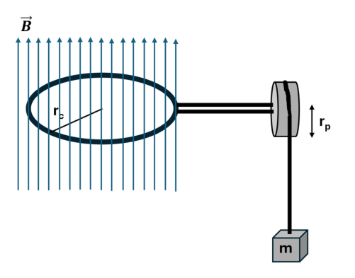
bobina circolare su puleggia con massa appesa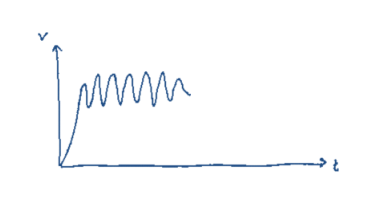
schizzo v(t) velocità massa con oscillazioniTopic: Electromagnetic Induction, Newtonian Mechanics Metodi: Faraday’s Law of Induction, Conservation of Energy, Differential Equations Competenze: Mathematical Modeling, Physical Reasoning, Diagrammatic Reasoning Fonte: Testo (PDF) — p.13
Problema 28
The blue color of Morpho butterfly’s wings is not due to pigment molecules but is instead caused by light interference. This interference occurs when light reflects off the nano-size, tree-shaped structure on the wing’s surface called lamellae. These lamellae consist of thin, transparent layers ( thick) with a refractive index of , separated by air gaps.
a. Considering the perpendicular reflections from only the top two transparent layers, calculate the size of the air gap between the layers. ()
b. Calculate the wavelength of the light reflected by the wing if it were dipped in liquid nitrogen. Assume that liquid nitrogen would replace the air gaps and would not change the dimensions of the wing. The index of refraction of liquid nitrogen is .
c. As the butterfly flies, an observer will see the reflections of light incident on the wings at different angles. Considering the reflection from only the top two layers, calculate the wavelengths of the observed light for the angles of incidence of , , , , , and . What is the color of the observed light during flight?
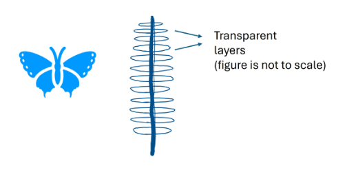
struttura lamellare ala farfalla MorphoTopic: Wave Optics, Modern-Quantum Physics Metodi: Interference & Diffraction Analysis, Snell’s Law, Approximation & Series Expansion Competenze: Mathematical Modeling, Physical Reasoning, Diagrammatic Reasoning Fonte: Testo (PDF) — p.15